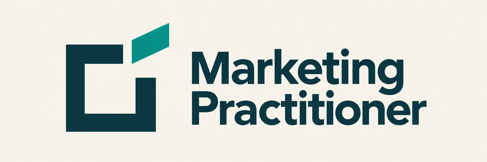
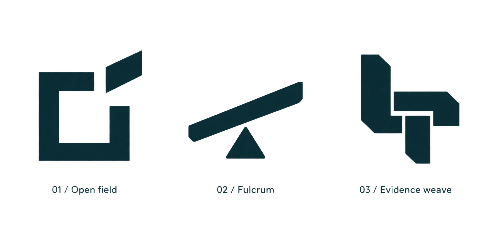

Marketing Practitioner
Dấu chuyển
Khung mở để quan sát. Mảnh nghiêng tách ra để hành động trên căn cứ đã cân nhắc.
Tải bộ logo ZIP · Brief và quyết định thiết kế · Prompt ImageGen

Biểu tượng riêng
Biểu tượng đi cùng tên
Kiểm tra thu nhỏ
Các ảnh dưới hiển thị ở kích thước CSS ghi nhãn khi trình duyệt ở mức thu phóng 100%. 24 px là mức đề xuất tối thiểu; ưu tiên 32 px cho biểu tượng plugin. 16 px chỉ dùng khi bắt buộc vì khe hở rất nhỏ.
16 px24 px32 px48 px64 px128 px
Bảng kiểm tra các biến thể ở kích thước thật
Ba ý tưởng đã khảo sát bằng hình

Chọn Dấu chuyển vì quan hệ khung mở–mảnh rời rõ và dễ giữ nhất quán. Điểm tựa dễ gợi bập bênh; Dệt bằng chứng có khe hẹp ở cỡ nhỏ. Dấu chuyển vẫn có khả năng gợi chức năng mở liên kết; mảnh đầu bằng giúp tránh dùng mũi tên trực tiếp.
Bộ này là PNG raster có nền, chưa có SVG/vector hay bản trong suốt đã kiểm chứng. Các nhận xét là đánh giá thiết kế và hiển thị; chưa nghiên cứu khách hàng, đối thủ hoặc đo trí nhớ thương hiệu. Tagline giữ nguyên trong tài liệu: “From customer evidence to marketing decisions and execution.”